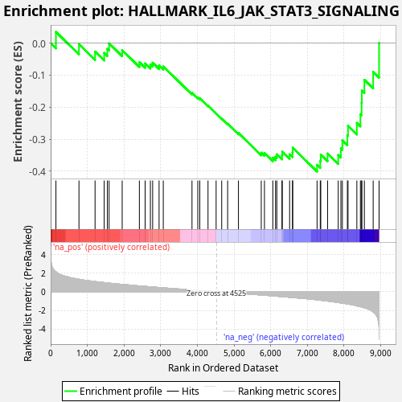
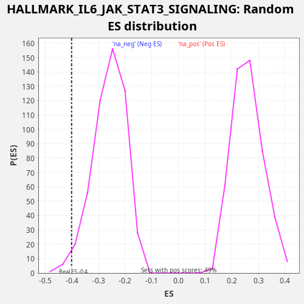

| Dataset | star_PE_rank_metric |
| Phenotype | NoPhenotypeAvailable |
| Upregulated in class | na_neg |
| GeneSet | HALLMARK_IL6_JAK_STAT3_SIGNALING |
| Enrichment Score (ES) | -0.40131202 |
| Normalized Enrichment Score (NES) | -1.5420231 |
| Nominal p-value | 0.021400778 |
| FDR q-value | 0.03229804 |
| FWER p-Value | 0.252 |

| SYMBOL | RANK IN GENE LIST | RANK METRIC SCORE | RUNNING ES | CORE ENRICHMENT | |
|---|---|---|---|---|---|
| 1 | IFNAR1 | 144 | 2.159 | 0.0354 | No |
| 2 | STAM2 | 772 | 1.339 | -0.0030 | No |
| 3 | CBL | 1211 | 1.093 | -0.0260 | No |
| 4 | CD38 | 1460 | 0.982 | -0.0304 | No |
| 5 | STAT1 | 1546 | 0.944 | -0.0174 | No |
| 6 | CCR1 | 1594 | 0.924 | -0.0006 | No |
| 7 | ACVR1B | 1951 | 0.789 | -0.0217 | No |
| 8 | PTPN11 | 2420 | 0.621 | -0.0594 | No |
| 9 | TNFRSF21 | 2577 | 0.577 | -0.0631 | No |
| 10 | PIM1 | 2720 | 0.530 | -0.0664 | No |
| 11 | PIK3R5 | 2782 | 0.512 | -0.0610 | No |
| 12 | CD14 | 2957 | 0.452 | -0.0697 | No |
| 13 | IFNGR2 | 3072 | 0.419 | -0.0725 | No |
| 14 | LTB | 3855 | 0.195 | -0.1556 | No |
| 15 | CSF2RB | 4013 | 0.154 | -0.1695 | No |
| 16 | IL4R | 4067 | 0.140 | -0.1721 | No |
| 17 | JUN | 4292 | 0.073 | -0.1955 | No |
| 18 | ITGA4 | 4513 | 0.005 | -0.2201 | No |
| 19 | IL2RG | 4665 | -0.039 | -0.2361 | No |
| 20 | CNTFR | 4827 | -0.091 | -0.2520 | No |
| 21 | PTPN1 | 5122 | -0.166 | -0.2810 | No |
| 22 | STAT2 | 5744 | -0.345 | -0.3424 | No |
| 23 | STAT3 | 5831 | -0.373 | -0.3432 | No |
| 24 | IL6ST | 6059 | -0.443 | -0.3581 | No |
| 25 | IL12RB1 | 6133 | -0.469 | -0.3551 | No |
| 26 | HAX1 | 6168 | -0.479 | -0.3474 | No |
| 27 | SOCS3 | 6309 | -0.516 | -0.3508 | No |
| 28 | OSMR | 6317 | -0.518 | -0.3392 | No |
| 29 | INHBE | 6517 | -0.592 | -0.3474 | No |
| 30 | CD44 | 6596 | -0.623 | -0.3413 | No |
| 31 | CSF3R | 6602 | -0.624 | -0.3269 | No |
| 32 | MYD88 | 7266 | -0.867 | -0.3806 | Yes |
| 33 | TNFRSF1B | 7353 | -0.908 | -0.3686 | Yes |
| 34 | PDGFC | 7367 | -0.914 | -0.3482 | Yes |
| 35 | IL1R1 | 7553 | -1.001 | -0.3450 | Yes |
| 36 | IL17RB | 7843 | -1.162 | -0.3497 | Yes |
| 37 | TYK2 | 7916 | -1.202 | -0.3291 | Yes |
| 38 | BAK1 | 7956 | -1.223 | -0.3043 | Yes |
| 39 | IFNGR1 | 8093 | -1.306 | -0.2883 | Yes |
| 40 | CSF1 | 8110 | -1.322 | -0.2586 | Yes |
| 41 | IL17RA | 8351 | -1.514 | -0.2493 | Yes |
| 42 | ACVRL1 | 8448 | -1.601 | -0.2219 | Yes |
| 43 | HMOX1 | 8481 | -1.637 | -0.1864 | Yes |
| 44 | LTBR | 8487 | -1.641 | -0.1477 | Yes |
| 45 | IL15RA | 8556 | -1.718 | -0.1143 | Yes |
| 46 | IRF1 | 8796 | -2.158 | -0.0896 | Yes |
| 47 | TNFRSF1A | 8957 | -4.514 | 0.0002 | Yes |
